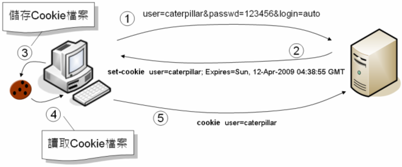

Web應用程式會話管理的基本方式，就是在此次請求中，將下一次請求時伺服器所應知道的資訊，先回應給瀏覽器，由瀏覽器在之後的請求再一併發送給應用程式，如此應用程式就可以「得知」多次請求間的相關資料。
Cookie是在瀏覽器儲存訊息的一種方式，伺服器可以回應瀏覽器set-cookie標頭，瀏覽器收到這個標頭與數值後，會將之儲存為電腦上的一個檔案，這個檔案就稱之為Cookie。你可以設定給Cookie一個存活期限，保留一些有用的訊息在客戶端，大小限制是4KB，如果關閉瀏覽器之後，再度開啟瀏覽器並連接伺服器，而Cookie仍在有效期限中，瀏覽器會使用cookie標頭自動將Cookie發送給伺服器，伺服器就可以得知一些先前瀏覽器請求的相關訊息。

Cookie可以設定存活期限，所以在客戶端儲存的資訊可以活得更久一些（除非使用者主動清除Cookie資訊）。有些購物網站常使用Cookie來記錄 使用者的瀏覽歷程，雖然使用者沒有實際購買商品，但在下次使用者造訪時，仍可以根據Cookie中所儲存的瀏覽歷程為使用者建議購物清單。
如果你要建立Cookie，可以呼叫cookies方法，它會傳回ActionDispatch::Cookies::CookieJar實例，它定義了[]與[]=方法，可以指定或取得Cookie中的名稱與數值。例如：
cookies[:user] = "caterpillar"
使用cookies[:user]或cookies["user"]都是相同的，這使得回應中帶有以下標頭：
Set-Cookie user=caterpillar; path=/
如果要設定Cookie存活期限或其它選項，可以如下：
cookies[:user] = {
:value => "caterpillar",
:expires => 2.week.from_now,
:domain => "openhome.cc"
}
如範例中所示，可以使用:expires設定Cookie的有效期限，要設定的物件是ActiveSupport::TimeWithZone實例。預設是關閉瀏覽器之後Cookie就失效。如果要設定儘可能永不失效的Cookie，可以使用permanent方法（其實是從建立起的20年後失效XD），它會傳回ActionDispatch::Cookies::PermanentCookieJar（繼承自ActionDispatch::Cookies::CookieJar）實例，例如：
cookies.permanent[:login] = "XJ-122"
如果要取得瀏覽器送出的某個Cookie，可以直接cookies[:key]取得，其中:key是Cookie的鍵，如果要取得所有Cookie，則可以使用each方法。例如：
cookies.each do |key, value|
# .... 作一些事
end
如果要刪除Cookie，可以使用delete方法，會將指定的Cookie設定為空字串。例如：
cookies.delete :user
cookies.delete(:user, :domain => "openhome.cc")
運用Cookie的另一個常見應用就是實作使用者自動登入（Login）功能。在使用者登入表單上，你應該經常看到有個自動登入的選項，登入時若有核取該選項，下次再造訪同一網頁，就不再需要輸入名稱密碼，而可以直接登入網頁。
以下將實作一個簡單的範例來示範Cookie API的使用。當使用者造訪首頁時，會檢查使用者先前是否允許自動登入，如果是的話，就直接將轉送至使用者頁面：
class TestsController < ApplicationController
def index
if cookies[:user] == "caterpillar"
@user = cookies[:user]
render "user"
else
redirect_to :action => "login"
end
end
def login
if params[:user] == "caterpillar" && params[:passwd] == "123456"
if params[:auto_login]
cookies[:user] = { :value => params[:user], :expires => 2.week.from_now }
end
@user = params[:user]
render "user"
end
end
end
<%= form_tag "login" do %>
<%= label_tag "user", "User: " %><%= text_field_tag "user" %><br>
<%= label_tag "passwd", "Password: " %><%= password_field_tag "passwd" %><br>
<%= label_tag "auto_login", "Auto login: " %><%= check_box_tag "auto_login" %><br>
<%= submit_tag "Login" %>
<% end %>